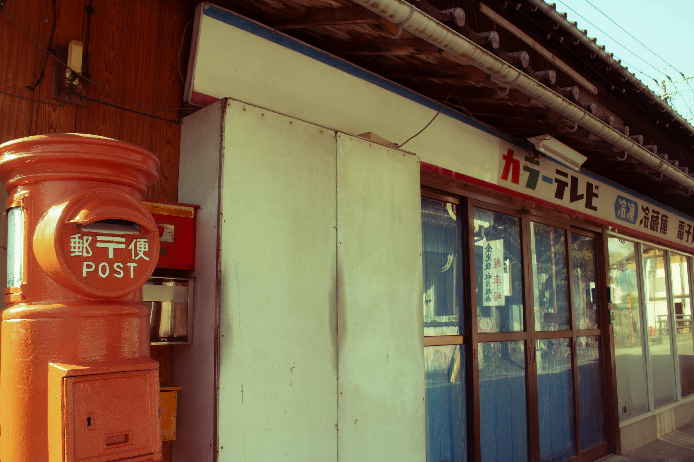
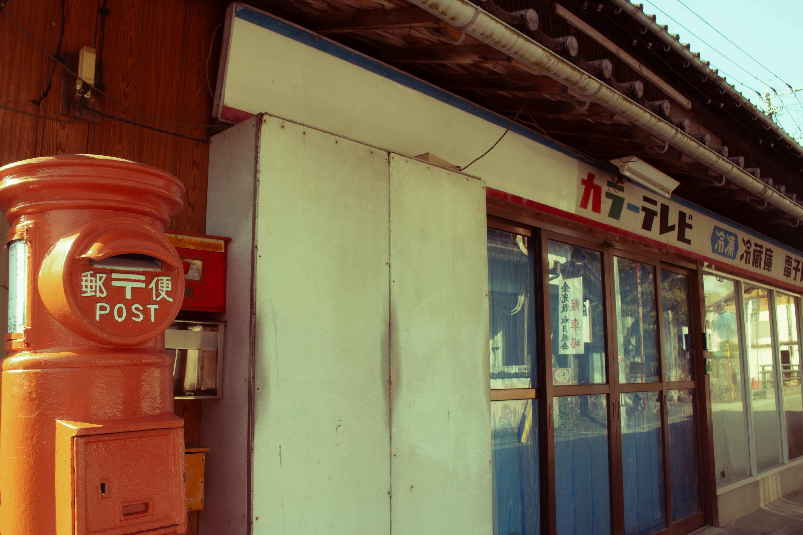

Photo

 

Piano
~K's StreetPiano History~
Tenjin SorariaPlaza (Honeybees and Distant thunder ver.)
Sagaarashiyama Station
Kyoto Station ×2
Kyouseinosato
Koga SA
Aso Shirakawa Station
Tenjin SorariaPlaza (New ver.) ×???
Dazaifu Station ×2
Strait Drama Ship
Yufuin Station side
MARK IS Fukuoka (Xmas ver.)×2
Kyoto Station west side
Kokura Station
Nagasaki Station